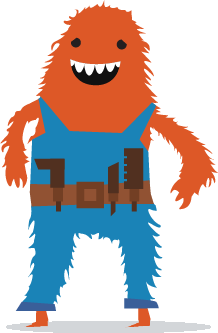

Sparky 
Sparky is a live data binding template and view layer for HTML/SVG/JS. It enhances the DOM with declarative data bindings, composeable templates, and tags and filters that render changes to the DOM in batches at the browser frame rate.
tests.html